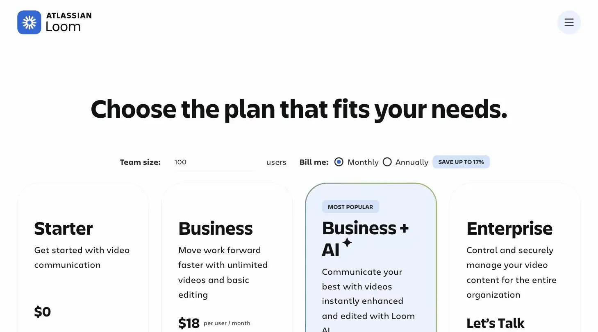
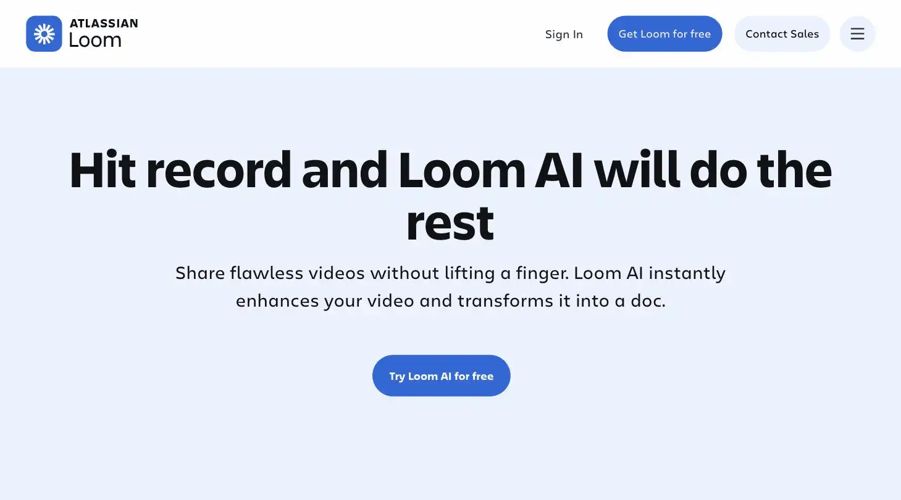

Loom
He'd recorded the whole explanation rather than write it down. The orb ran out after five minutes, a gentle hint to get to the point.
Loom is an async screen and video recording tool with an AI layer that transcribes, summarizes, and turns recordings into shareable docs. Best for solopreneurs sending client updates and onboarding walkthroughs instead of scheduling a call. Priced at $18-$24/user/month once you outgrow the free tier's 5-minute cap, the site's verdict is Business+AI only if you'll actually use the AI features, otherwise the base Business plan is enough.
Loom lets you record a video instead of writing an email, which is either a productivity hack or a way to talk for longer than the email would have taken. The free tier caps at 5 minutes, a gentle nudge to get to the point.
- Value for price6.5/10
- Capability7/10
- Ease of use9/10
- Trial safety6/10

Loom records your screen, camera, or both and turns it into a link you can send instead of scheduling a call, which matters most for solopreneurs who'd rather explain something once on video than repeat it in three separate client meetings.

Loom AI can auto-transcribe a recording, remove filler words, and generate a written doc from it, turning one video into shareable text without opening a separate transcription tool.
Example from loom.com. Not independently tested by Solos Gems.Pricing breakdown
- Starter (Free): up to 25 videos, 5-minute cap per video, up to 10 users
- Business: $18/user/month; unlimited videos, basic editing, no cap on recording length
- Business+AI: $24/user/month; adds transcript editing, filler-word removal, auto-generated titles, summaries, and chapters
- Enterprise: custom pricing; adds advanced admin controls and security features
The free tier's real limit
Loom's free plan looks generous at 25 videos, but the 5-minute cap per video is the number that actually matters. A real client walkthrough or onboarding video routinely runs longer than that, so most solopreneurs who use Loom for actual business communication end up on Business within the first week or two, not because they hit the video count, but because they hit the length limit.
Pros
- Fastest way to record and share an async video, no file export or upload step
- Recipients get a link instantly, no login required to watch
- AI-generated docs and summaries are genuinely useful for SOPs and handoffs
Cons
- Free tier's 5-minute cap is too short for real client walkthroughs
- The full AI feature set requires the $24/mo tier, not the base $18 Business plan
- Per-user pricing adds up quickly if you ever bring on a second seat
Common questions
Is Loom's free tier usable for real client work?
It's tight. The free tier caps videos at 5 minutes, too short for a real walkthrough or onboarding video, expect to hit that wall on your first genuine client recording.
Do I need the AI-specific tier?
Only if you'll actually use the AI features, summaries, action items, and similar. The base Business plan at $18/month covers standard recording and sharing; the full AI feature set requires the $24/month tier.
Does the price change if I add a teammate?
Yes, Loom bills per user, so adding even a second seat increases the monthly cost meaningfully, worth confirming you actually need a shared workspace before adding seats.